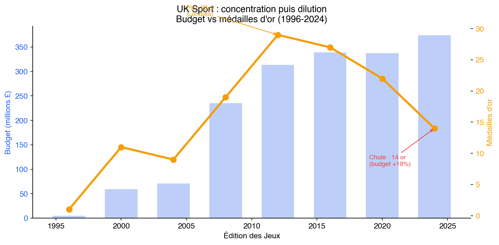
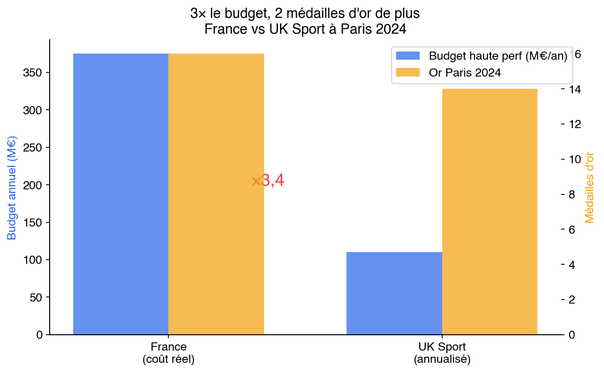
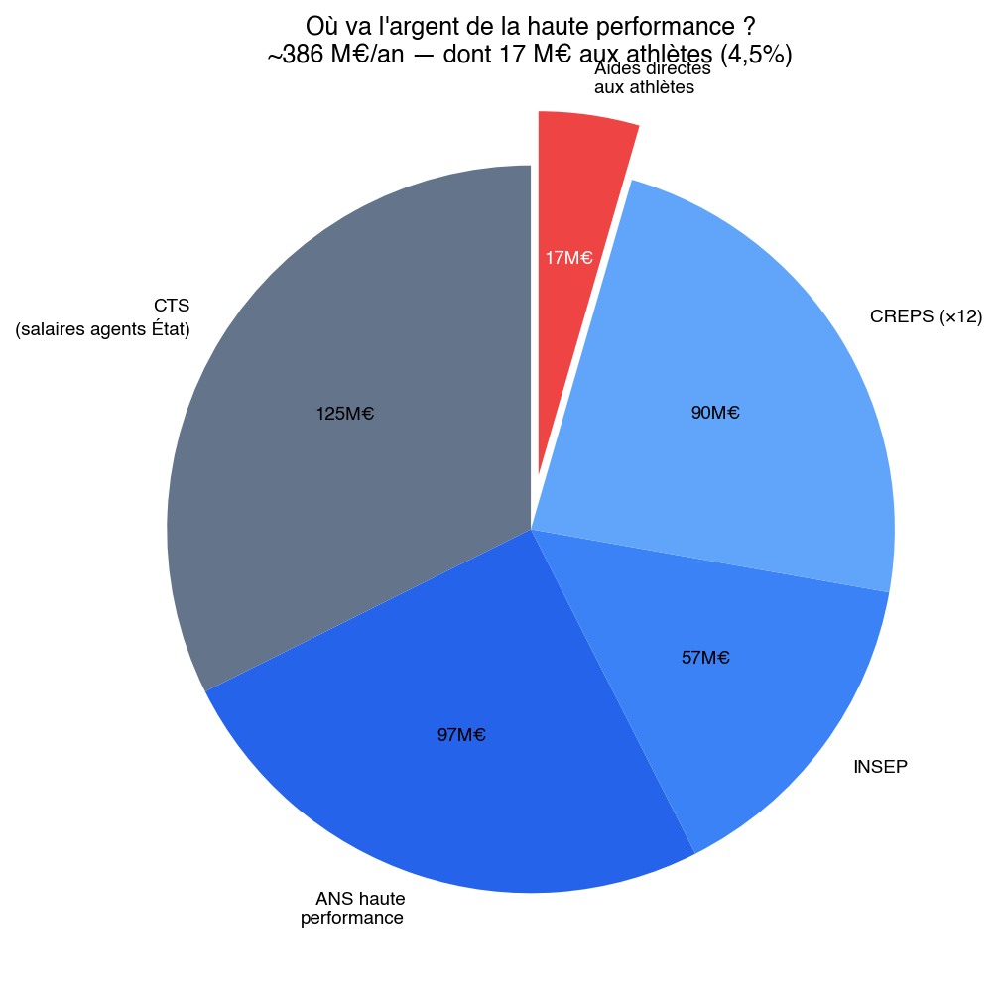

Comment tweaker le système
1. Détecter plus tôt, plus large
La France dispose, depuis la rentrée 2025, d’un outil inédit dans son histoire sportive : les tests de condition physique en classe de sixième, administrés sous l’égide de la DEPP (Direction de l’évaluation, de la prospective et de la performance). Trois épreuves standardisées – endurance navette, test de force du haut du corps, sprint – sont proposées aux élèves de onze et douze ans dans le cadre de l’éducation physique et sportive. L’initiative s’inscrit dans le prolongement du programme “Savoir rouler, savoir nager, savoir courir” et répond à une préoccupation légitime de santé publique : mesurer la condition physique des enfants français dans un contexte de sédentarité croissante.
Le problème est que ces tests sont orientés santé, pas performance. Et qu’ils souffrent de trois failles structurelles qui les rendent inopérants comme outils de détection sportive.
Première faille : les tests ne sont pas obligatoires. Ils sont proposés aux établissements, qui peuvent ou non les administrer selon les moyens humains et matériels disponibles. Le résultat est prévisible. Dans l’académie de Créteil, qui couvre la Seine-Saint-Denis, le Val-de-Marne et la Seine-et-Marne – soit le bassin de population le plus dense de France après Paris intra-muros, et celui qui produit le plus grand nombre de sportifs professionnels dans les disciplines athlétiques –, le taux de couverture plafonne à 30 %. Trois élèves sur dix sont testés. Dans les académies rurales, le taux est plus élevé, mais le vivier démographique est plus restreint. Le résultat net est que les zones à fort potentiel de détection sont précisément celles où le dispositif est le moins déployé.
Deuxième faille : les résultats ne sortent pas de l’Éducation nationale. Les données collectées alimentent des statistiques agrégées sur la condition physique des enfants français. Elles ne sont pas transmises aux fédérations sportives, aux clubs, aux structures de détection. Un élève de sixième qui court le 60 mètres en 8 secondes – un temps qui le placerait dans le premier percentile national pour son âge – n’est signalé à personne. Sa performance est enregistrée, anonymisée, intégrée à un rapport ministériel, et oubliée. Le gamin retourne en cours de mathématiques. Si sa famille n’a pas la connaissance du système sportif, si elle ne sait pas que ce temps correspond à un profil athlétique exceptionnel, si elle ne connaît pas le club d’athlétisme le plus proche, le talent disparaît dans le néant statistique.
Troisième faille : la batterie de tests est incomplète. Endurance, force, vitesse : c’est un bilan de santé, pas un profil athlétique. Il manque trois mesures essentielles à toute détection sportive sérieuse. La détente verticale (vertical jump), qui est le meilleur prédicteur de puissance explosive et qui oriente vers le basketball, le volleyball, le saut en hauteur, le sprint. La coordination motrice, qui distingue les profils techniques (escrime, gymnastique, sports de combat) des profils purement athlétiques. Et les données anthropométriques de base – taille, envergure, rapport buste-jambes – qui permettent d’identifier les morphotypes adaptés à certaines disciplines. Ces trois mesures ajoutent quatre minutes au protocole par élève. Quatre minutes. Le coût marginal est dérisoire. L’information manquante est considérable.
La proposition est simple dans son principe et modeste dans son coût. Rendre les tests obligatoires pour tous les élèves de sixième, soit environ 800 000 enfants par an. Ajouter les trois épreuves manquantes. Et surtout, créer une plateforme numérique – un “Profil Athlétique France” – accessible à chaque famille, sur laquelle les résultats individuels sont croisés avec les seuils de performance définis par chaque fédération sportive. La famille consulte le profil de son enfant et découvre les disciplines pour lesquelles il présente un potentiel. Si elle le souhaite, elle peut contacter directement les fédérations concernées via la plateforme. Le mécanisme est fondamental : c’est la famille qui tire l’information (pull), pas la fédération qui contacte la famille (push). Cette architecture résout le problème du RGPD – pas de transmission de données médicales ou biométriques à des tiers, c’est le citoyen qui consulte son propre profil et qui décide d’agir ou non. Le caractère non contraignant est essentiel. Il ne s’agit pas de reproduire les systèmes de détection autoritaires de l’Allemagne de l’Est ou de la Chine. Il s’agit de combler un déficit d’information qui, aujourd’hui, pénalise exclusivement les familles qui ne connaissent pas le système.
Mais la plateforme ne fonctionne que si l’autre bout répond. Un gamin de Vitry découvre qu’il a un profil de triple sauteur. Il clique sur “Fédération française d’athlétisme.” Il tombe sur un site de 2019 avec un numéro qui ne répond pas. Fin de l’histoire. Le dispositif doit inclure une obligation, pour chaque fédération bénéficiaire de fonds publics, de maintenir un référent détection joignable, avec un budget dédié pour accueillir les primo-contacts. Le coût additionnel est de 50 000 à 100 000 euros par fédération et par an. Pour trente fédérations olympiques, 1,5 à 3 millions d’euros. C’est le prix d’un demi-terrain synthétique de football.
Doubler le dispositif par un second passage en classe de troisième permet de capter les développements tardifs. La puberté redistribue les cartes physiologiques entre douze et quinze ans. Un élève ordinaire en sixième peut devenir un profil exceptionnel en troisième, et inversement. Ne tester qu’une fois, c’est figer un instantané biologique à un âge où tout change. Les pays qui détectent le mieux – l’Australie avec ses programmes “Talent Search”, les Pays-Bas avec leurs protocoles scolaires intégrés – testent systématiquement à deux moments de la scolarité.
Prenons un exemple concret. Un garçon de douze ans scolarisé à Vitry-sur-Seine court le 60 mètres en 8 secondes et affiche une détente verticale de 55 centimètres. Aujourd’hui, ce gamin joue au football. C’est le choix par défaut dans son quartier, celui que tout le monde fait, celui que le grand frère a fait, celui que les copains font. Personne ne lui dit que son profil biomécanique – vitesse, puissance explosive, coordination – correspond davantage au triple saut, au décathlon ou au sprint. Personne ne lui dit que le club d’athlétisme se trouve à 800 mètres de chez lui. Avec le système proposé, sa famille reçoit une lettre. Pas une injonction. Une information. Ce que la famille en fait lui appartient. Mais l’information existe, et c’est toute la différence.
Le coût estimé du dispositif est de 8 à 12 millions d’euros par an. Il couvre la formation des enseignants d’EPS au protocole élargi, l’acquisition du matériel de mesure (tapis de détente, chronomètres électroniques, toises), le développement et la maintenance de la base de données, et l’envoi des courriers aux familles. Rapporté au budget de l’Éducation nationale (60 milliards d’euros) ou au budget de l’Agence nationale du sport (461 millions d’euros en 2024), c’est un coût marginal pour un effet potentiellement transformateur.
Miroir éducatif. Le système éducatif français oriente les élèves sur la base de leurs résultats scolaires, qui sont eux-mêmes largement déterminés par le capital culturel familial. L’enfant de professeur sait qu’il existe des classes préparatoires. L’enfant d’ouvrier ne le sait pas, ou pas au bon moment. L’orientation n’est pas un problème de talent. C’est un problème d’information. La détection sportive souffre du même mal. Les tests de sixième DEPP, rendus obligatoires, élargis et connectés aux fédérations, seraient l’équivalent sportif d’une orientation fondée sur les aptitudes réelles plutôt que sur les codes familiaux. Non pas une égalité de destin, mais une égalité d’information sur le destin possible.
2. Scaler l’INSEP
L’INSEP fonctionne. C’est le diagnostic d’Onesta lui-même : “L’INSEP est une chance pour le sport français.” Mais il est seul. Et il est plein. Vingt-huit hectares, 800 sportifs, 28 pôles France – c’est un vaisseau amiral sans flotte. La question n’est pas de savoir si l’INSEP est bon. Il est bon. La question est : pourquoi n’y en a-t-il qu’un ?
La réponse convenue est budgétaire. Mais le vrai goulet d’étranglement n’est pas les murs : c’est le staff. Ce qui fait de l’INSEP un centre d’excellence, ce ne sont pas ses bâtiments (rénovés en 2014, certes). Ce sont ses 150 entraîneurs, ses médecins, ses biomécaniciens, ses psychologues, ses nutritionnistes. Un CREPS, en comparaison, c’est un directeur, trois conseillers techniques sportifs et une infirmière. Scaler l’INSEP ne signifie pas construire un deuxième bâtiment à Vincennes. Cela signifie mettre le staff INSEP dans d’autres lieux.
Pourquoi une seule équipe de basket au pôle France ? La FFBB a dû refuser 80 000 demandes de licences après Paris 2024. Avec 19 Français en NBA, 38 en Euroleague, 70 en NCAA, le vivier est suffisant pour deux cohortes simultanées au pôle France. Le même raisonnement s’applique au judo (600 000 licenciés, une seule structure INSEP), à l’athlétisme (350 000 licenciés, des résultats en berne). La limitation n’est pas le talent. C’est la capacité d’accueil du pipeline.
Deux sites méritent une montée en puissance immédiate.
Le CREPS Antilles-Guyane comme hub Amériques. Le CREPS de Pointe-à-Pitre est déjà une réalité opérationnelle. Il accueille 233 athlètes dans 18 pôles. Sa généalogie sportive est exceptionnelle : Marie-José Pérec, Christine Arron, Roger Bambuck ont été formés dans le creuset antillais. Laura Flessel y a construit les fondations de sa carrière d’escrimeuse. Teddy Riner y a préparé les Jeux de Paris 2024. Ce n’est pas un centre marginal. C’est l’un des viviers les plus productifs du sport français, rapporté à la population des territoires qu’il dessert.
Sa position géographique lui confère un avantage stratégique inexploité. La Guadeloupe est à trois heures trente de Miami, au coeur du bassin caribéen, dans le même fuseau horaire que la côte est des États-Unis. C’est la porte d’entrée naturelle vers le système universitaire américain, celui-là même qui a produit Marchand, qui accueille chaque année des centaines d’athlètes français, qui élève ce que la France forme. Transformer le CREPS Antilles-Guyane en hub Amériques signifie y installer un bureau de placement NCAA intégré, capable d’accompagner les athlètes ultramarins – et métropolitains – dans leur parcours vers les universités américaines. Négocier des accords-cadres avec des programmes DI. Organiser des stages croisés, des compétitions transatlantiques, des échanges de coaches. Le coût additionnel est estimé à 500 000 euros par an. C’est le prix d’un poste de directeur sportif et de deux chargés de mission bilingues. Pour un retour potentiel en termes de parcours d’athlètes et de transfert de savoir-faire, le ratio est sans commune mesure.
Le pôle Marseille post-JO. Les Jeux de Paris 2024 ont laissé un héritage infrastructurel considérable, mais la question de l’après-JO se pose avec acuité pour les sites de compétition hors Paris. Marseille, qui a accueilli les épreuves de voile et certains matchs de football, dispose d’un bassin de population de deux millions d’habitants dans l’aire métropolitaine, d’un climat permettant l’entraînement en extérieur toute l’année, et de quartiers populaires qui constituent un vivier de talents athlétiques largement sous-exploité. Un pôle d’excellence à Marseille, doté de 15 à 25 millions d’euros par an, accueillant 8 à 10 disciplines, permettrait de capter des profils qui ne feront jamais le trajet jusqu’à l’INSEP de Vincennes. Pas parce qu’ils manquent de talent. Parce qu’ils manquent de réseau.
Les antennes légères. Lyon, Bordeaux, Nantes, Toulouse : ces métropoles de 500 000 à 1,5 million d’habitants disposent de structures sportives, de clubs de haut niveau, de STAPS universitaires. Ce qui leur manque, c’est une antenne de détection et d’orientation connectée au réseau INSEP. Pas un campus lourd. Pas une infrastructure de 50 millions d’euros. Un bureau de trois personnes – un détecteur, un préparateur physique, un coordinateur administratif – capable d’identifier les profils prometteurs dans le bassin local et de les orienter vers le pôle adapté. Le coût unitaire est de 200 000 à 300 000 euros par an. Pour quatre antennes, un million d’euros. C’est le prix d’un tiers de terrain synthétique de football.
Miroir éducatif. La France a longtemps concentré l’excellence universitaire à Paris. Sciences Po, Polytechnique, HEC, ENS : les grandes écoles étaient parisiennes, et quiconque voulait accéder au sommet devait monter à la capitale. La création des pôles universitaires de province – ESSEC à Cergy puis Singapour, Sciences Po en région, les instituts d’études avancées de Lyon et Marseille – a commencé à desserrer cet étau sans abaisser le niveau d’exigence. Multiplier les INSEP, c’est appliquer au sport la même logique de décentralisation de l’excellence. Non pas diluer la qualité en la répartissant, mais la rapprocher des viviers là où ils se trouvent.
3. Protéger les micro-pôles
Le système sportif français repose sur une architecture pyramidale : clubs de base, pôles espoirs, pôles France, INSEP. Cette architecture a une vertu – la lisibilité – et un défaut – la rigidité. Car les succès les plus marquants du sport français récent n’ont pas été produits par la pyramide. Ils ont été produits à ses marges.
Philippe Lucas et Laure Manaudou à Melun, puis à Canet-en-Roussillon. Fabrice Pellerin et Camille Muffat à Nice. La famille Lebrun et le tennis de table à Montpellier. L’académie Mouratoglou à Sophia Antipolis. La MMA Factory de Fernand Lopez à Paris. Ces micro-structures partagent des caractéristiques communes. Un entraîneur-architecte qui a une vision, une méthode, une obsession. Un groupe restreint de 10 à 15 athlètes. Un fonctionnement artisanal, parfois chaotique, toujours intense. Une liberté méthodologique totale – pas de protocole fédéral imposé, pas de reporting trimestriel, pas de commission technique à satisfaire. Et des résultats disproportionnés par rapport aux moyens engagés.
Le cas du tennis de table français est le plus instructif. Les frères Lebrun – Alexis et Félix – ont été formés à Montpellier dans un écosystème familial d’une densité remarquable. Le père, Stéphane Lebrun, ancien joueur professionnel, est le pilier de la structure. L’oncle Christophe Legoût apporte l’expertise technique complémentaire. L’entraîneur Nathanaël Molin complète le dispositif. Ce micro-pôle, construit autour d’une famille et de deux ou trois personnes de confiance, a produit deux joueurs classés dans le top 10 mondial : Alexis, sixième mondial, et Félix, dixième. La France, pays qui n’avait jamais pesé dans le tennis de table mondial au-delà de quelques apparitions épisodiques, s’est retrouvée avec deux frères capables de rivaliser avec les meilleurs Chinois, Japonais et Coréens.
La question que pose le modèle Lebrun est celle de la reproductibilité. Un micro-pôle familial, par définition, ne se décrète pas. On ne peut pas ordonner à des pères de famille de former leurs enfants au tennis de table pendant quinze ans. Mais on peut créer les conditions pour que de tels écosystèmes émergent et survivent. Aujourd’hui, la pérennité du micro-pôle Lebrun se mesure à sa capacité à produire des successeurs. Les noms de Coton et de Poret circulent comme les prochains talents issus de la structure montpelliéraine. Si le système produit une deuxième vague, c’est un modèle. Si les frères Lebrun restent un accident familial sans descendance sportive, c’est une parenthèse.
Le micro-pôle n’est pas un lieu. C’est un véhicule de financement. Près de la moitié des sportifs de haut niveau français gagnent moins de 500 euros par mois. Ils passent leur temps à créer des cagnottes, à chercher des sponsors, à négocier des aménagements d’emploi du temps – au lieu de s’entraîner. Le système militaire résout ce problème pour 224 athlètes : un salaire, un logement, un cadre. Résultat : 13 % de la délégation, 30 % des médailles. Le micro-pôle est la version civile de l’Armée de Champions. Un véhicule qui prend un athlète ou un petit groupe, les finance jusqu’à un objectif (les Jeux, un titre mondial, le top 8), les encadre (coach, préparateur, kiné, back-office administratif), et les libère de la précarité pour qu’ils puissent se concentrer sur une seule chose : performer.
Aujourd’hui, les micro-pôles qui existent se sont construits sur deux bases. Soit un outlier qui génère son propre écosystème : Félix Lebrun devient top 5 mondial, les sponsors arrivent, les revenus structurent le pôle autour de lui. Soit un investisseur passionné qui met son propre argent : Mouratoglou à Sophia-Antipolis, 34 courts, 12 hectares, sans un euro de subvention. Dans les deux cas, c’est fragile : si Lebrun se blesse ou si Mouratoglou se lasse, le pôle s’arrête. Et dans les deux cas, c’est rare : il n’y a qu’un Lebrun, qu’un Mouratoglou. L’enjeu est de multiplier les micro-pôles au-delà des outliers et des milliardaires.
Le problème concret est celui du back-office. Le père des Lebrun est à la fois entraîneur, manager, logisticien et administrateur. Si le père tombe malade, tout s’arrête. Chaque micro-pôle qui produit un champion produit aussi une économie (sponsors, prize money, droits d’image), mais cette économie est gérée de manière artisanale. Une administration professionnalisée – un directeur administratif, un chargé de communication, un juriste à temps partiel – coûte 150 000 à 250 000 euros par an. C’est le prix d’un demi-poste de footballeur de Ligue 2. Et c’est souvent la différence entre un micro-pôle qui survit et un micro-pôle qui prospère.
Trois mécanismes de financement sont envisageables, et ils ne s’excluent pas.
Le premier est la défiscalisation du mécénat sportif, sur le modèle de la loi Aillagon pour la culture (60 % de réduction d’impôt). Un statut de “pôle d’excellence sportive” éligible au mécénat permettrait à des entreprises locales, des fondations, des clubs de dirigeants de financer directement des micro-pôles. L’État ne finance pas. L’État ne contrôle pas. L’État crée l’incitation fiscale. Le micro-pôle reste libre. Le seul critère : la progression des athlètes vers le top 8 mondial. Si cette mesure avait existé en 2014, un chef d’entreprise aurait pu investir 100 000 euros dans la MMA Factory, en déduire 60 000 de ses impôts, et Fernand Lopez aurait eu des moyens dès le premier jour sans jamais remplir un formulaire fédéral. C’est la seule proposition où l’État n’est pas l’opérateur. L’exception se construit hors du système. Le financement de l’exception doit pouvoir le faire aussi.
Le deuxième est un fonds dédié alimenté par la FDJ, sur le modèle UK Sport. La Française des Jeux, privatisée en 2019, reverse déjà une fraction de ses revenus au sport. Ce prélèvement pourrait être fléché vers un fonds “micro-pôles haute performance”, géré indépendamment de l’ANS et des fédérations, avec un mandat de huit ans (deux cycles olympiques) et une gouvernance autonome. C’est le mécanisme qui a permis à UK Sport de passer de 1 médaille d’or en 1996 à 29 en 2012 : un financement sanctuarisé, déconnecté des alternances politiques, piloté par la performance.
Le troisième est le plus structurant : la SOFISA, Société pour le Financement de l’Innovation Sportive et Athlétique – une transposition directe du modèle SOFICA qui a transformé le cinéma français depuis 1985. Le mécanisme est éprouvé : en quarante ans, les SOFICA ont injecté 1,8 milliard d’euros dans le cinéma français, financé un tiers de la production nationale et soutenu 2 500 longs métrages. Le CNC agrée les SOFICA, contrôle l’utilisation des fonds, mais ne choisit pas les films. Ce sont les SOFICA elles-mêmes – via leurs comités d’investissement – qui sélectionnent les projets. Les investisseurs bénéficient d’une réduction d’impôt de 48 %.
Transposé au sport : des sociétés de gestion privées créent des SOFISA. Elles collectent auprès de particuliers (réduction d’impôt de 48 %, plafond de 18 000 euros, blocage de quatre ans – un cycle olympique). Elles investissent 90 % des fonds dans des projets d’athlètes. L’athlète est le porteur de projet : il présente un dossier avec un objectif sportif (qualification olympique, top 8 mondial), un encadrement qu’il a lui-même choisi (coach, préparateur, kiné), un budget et un calendrier. La SOFISA sélectionne via un comité d’investissement composé d’anciens champions, d’un entraîneur de niveau international, d’un expert en science du sport et d’un représentant des investisseurs. Un commissaire de France Performance siège au comité pour vérifier le respect des règles, mais ne vote pas.
La fédération peut recommander un projet. Elle peut aussi ne pas le recommander. Elle n’a pas de veto. C’est le point décisif. Un athlète dont le projet est bloqué par un cadre fédéral pour des raisons non objectives a un chemin alternatif. C’est exactement ce que fait le CNC pour le cinéma : un réalisateur refusé par toutes les chaînes de télévision peut obtenir un financement SOFICA et tourner son film. Le système crée une voie de contournement institutionnelle.
Le mécanisme reproduit aussi le cercle vertueux générationnel du CNC : un athlète financé par une SOFISA qui atteint son objectif est ensuite invité à siéger dans le comité d’investissement pour évaluer les projets de la génération suivante. Des champions qui fondent des champions – exactement comme des réalisateurs qui évaluent des réalisateurs dans les commissions de l’avance sur recettes. Aujourd’hui, les anciens champions français n’ont aucun rôle institutionnel dans la détection et le financement de la génération suivante, sauf s’ils deviennent DTN (un poste administratif). La SOFISA leur donne un rôle concret.
Ce modèle n’est pas une invention. C’est un assemblage des meilleures briques existantes, avec l’athlète au centre.
La brique fiscale existe : le Pacte de Performance, opéré par la Fondation du Sport Français, finance déjà 604 athlètes par le mécénat d’entreprise défiscalisé à 60 % (loi Aillagon). Plus de 200 des 571 athlètes français sélectionnés pour les Jeux de Paris 2024 en bénéficiaient. Mais le Pacte est limité : un SMIC par an (23 000 euros), l’athlète ne choisit pas son mécène, et il faut être inscrit sur les listes ministérielles pour y accéder – ce qui exclut les profils émergents que le système n’a pas encore repérés.
La brique de l’échelle existe : la Deutsche Sporthilfe allemande, fondation privée créée en 1967, finance 4 000 athlètes par an pour 25 millions d’euros, avec des dons défiscalisés. C’est la preuve qu’un financement privé structuré peut atteindre une masse critique. Mais c’est un modèle philanthropique centralisé : la fondation décide, l’athlète reçoit. L’athlète n’est pas un entrepreneur. Il est un bénéficiaire.
La brique de l’autonomie existe : Big League Advance, aux États-Unis, a levé plus de 400 millions de dollars pour investir dans des carrières de jeunes joueurs de baseball. L’athlète est libre. L’investisseur prend un risque en equity sur les gains futurs. C’est du capital-risque appliqué au sport. Mais sans défiscalisation et uniquement viable dans les sports à très hauts salaires.
La brique du véhicule juridique existe : les SOFICA ont injecté 1,8 milliard d’euros dans le cinéma français en quarante ans, avec 48 % de réduction d’impôt, un ratio levier de un pour deux, et un contrôle par le CNC sans ingérence dans les choix artistiques. Il faut une loi pour étendre ce véhicule au sport.
La SOFISA prend de chacun ce qui manque aux autres. Du Pacte de Performance : la défiscalisation et l’ancrage français. De la Sporthilfe : l’échelle (des centaines d’athlètes). De Big League Advance : l’autonomie totale de l’athlète. Des SOFICA : le véhicule juridique, l’agrément, le contrôle sans ingérence. Et de nulle part ailleurs : le fait que la fédération ne soit pas le décideur. L’athlète est au centre. La fédération est consultée, pas consultative.
Enveloppe nationale proposée : 30 à 50 millions d’euros par an de collecte. Dépense fiscale pour l’État : 14 à 24 millions (48 % de l’enveloppe). Nombre d’athlètes financés : 200 à 400 par an. Ratio levier : un euro de dépense fiscale génère deux euros d’investissement privé dans le sport de haute performance.
Ces trois mécanismes visent le même objectif : combler le trou dans la raquette. Le système français finance la base (clubs, EPS, bénévoles) et le sommet (pôle France, INSEP, Armée de Champions). Mais entre les deux – entre le huitième des championnats de France et l’équipe de France – il n’y a rien. Un sprinter qui court le 100 mètres en 10 secondes 30 n’est dans aucune liste. Il a un emploi à côté. Il s’entraîne quinze heures par semaine au lieu de trente. Son coach est un bénévole de club. Pas de préparateur physique, pas de kiné, pas de stages en altitude. La fédération ne le voit pas. Avec 30 000 à 50 000 euros par an pendant deux ans – le coût d’un SPV sportif modeste –, il lâche son emploi, s’entraîne à temps plein, prend un coach qualifié, passe de 10”30 à 10”05. À 10”05, il est sélectionnable en équipe de France. Le système le capte enfin – mais c’est le SPV qui l’a amené là, pas le système. Le micro-pôle finance le gap que personne ne finance.
L’essentiel est que l’athlète soit maître de son destin. C’est lui qui porte le projet, qui choisit son encadrement, qui décide où et comment il s’entraîne. La SOFISA ou le SPV finance. La fédération peut recommander le projet – ou ne pas le recommander. Le financement ne dépend pas de l’aval fédéral. Si un cadre fédéral bloque un athlète pour des raisons non objectives, l’athlète a un chemin alternatif. Un organisme de contrôle – France Performance ou un tiers indépendant – agrée les véhicules et vérifie que les fonds vont bien aux athlètes. Mais il ne choisit pas les athlètes. Le marché choisit. Les performances choisissent.
L’impératif absolu est de ne pas intégrer ces micro-pôles dans la bureaucratie de l’INSEP ou des fédérations. L’histoire du sport français regorge d’exemples de structures innovantes absorbées par le système, normalisées, vidées de leur substance. Lucas a quitté le système fédéral parce que le système fédéral ne le supportait pas. Pellerin a fait de même. Lopez a construit la MMA Factory en dehors de toute structure fédérale, dans un sport qui n’avait même pas de fédération reconnue en France. Ces parcours marginaux ont produit des champions. Les intégrer dans la pyramide, c’est les détruire.
Miroir éducatif. Le système éducatif français connaît le même phénomène. Les parcours atypiques qui produisent des résultats exceptionnels – écoles Montessori, lycées expérimentaux, formations alternatives – sont systématiquement regardés avec suspicion par l’institution. Protéger les micro-pôles sportifs, c’est accepter que l’excellence puisse naître hors du système, et résister à la tentation de la normaliser.
4. Articuler avec l’étranger
Le constat a été posé dans les articles précédents : la France forme, l’étranger élève. Marchand en natation, des dizaines de basketteurs en NBA, plus de 300 athlètes passés par la NCAA en dix ans, 24 cyclistes français dans des équipes WorldTour étrangères. Ce flux n’est pas un dysfonctionnement. C’est une réalité structurelle que le système français subit au lieu de l’organiser.
Aujourd’hui, un athlète français qui part aux États-Unis via le système universitaire le fait de manière artisanale. Et surtout, il le fait en passant par des intermédiaires privés qui monétisent le placement. Les agences spécialisées (Elite Athletes, PrepScholar, Athlete USA) facturent entre 5 000 et 15 000 euros par athlète. Trois cents placements par an, dix mille euros en moyenne : trois millions d’euros qui sortent des poches des familles pour un service que l’État pourrait structurer. La fédération d’origine perd la trace de l’athlète. Son statut social est flou. Son retour n’est organisé par personne. Le résultat est une hémorragie de talents monétisée par des intermédiaires, qui bénéficie au système américain sans que le système français n’en retire quoi que ce soit.
La proposition tient en deux dispositifs complémentaires. Le premier est un “bureau NCAA” installé au CREPS Antilles-Guyane, doté de deux personnes bilingues qui font le travail des agences privées gratuitement : préparation linguistique, accompagnement administratif (visa, NCAA Eligibility Center, SAT/ACT), négociation avec les programmes universitaires, et suivi pendant le séjour. Coût : 300 000 euros par an. Impact : 150 à 200 placements par an sans intermédiaire. C’est le meilleur ratio coût-impact de toutes les propositions de cet essai.
Le second est un statut de “sportif en formation NCAA” qui maintient l’affiliation fédérale française, la couverture sociale et l’accès aux compétitions internationales sous les couleurs de la France. Ce statut repose sur des accords-cadres avec dix à quinze universités NCAA Division I, négociés fédération par fédération. Ces accords prévoient un suivi sportif conjoint (le coach américain et le DTN français échangent sur les programmes d’entraînement), un calendrier de compétitions estivales en France (l’athlète rentre en été pour disputer les championnats nationaux), et des passerelles de retour vers le système INSEP pour les athlètes qui souhaitent revenir après leurs quatre ans de formation.
L’enjeu est aussi de permettre les bascules dans les deux sens. Un athlète à l’INSEP qui stagne pourrait partir en NCAA pour deux ans sans perdre son statut. Un athlète NCAA qui performe pourrait réintégrer l’INSEP pour préparer les Jeux. Aujourd’hui, ces bascules n’existent pas : quitter l’INSEP, c’est sortir du système ; y revenir, c’est repartir de zéro. Les tunnels entre les deux écosystèmes doivent être fluides, institutionnalisés, et non monétisés.
Le CREPS Antilles-Guyane, dont la montée en puissance a été proposée plus haut, constitue la rampe de lancement naturelle de ce dispositif. La proximité géographique – trois heures trente de Miami, cinq heures de New York – réduit la friction logistique. Les athlètes ultramarins disposent souvent d’un avantage linguistique : le bilinguisme français-anglais, ou au minimum le créole-français-anglais, est plus répandu dans les Antilles que dans l’hexagone. Les stages de préparation pré-NCAA peuvent y être organisés dans des conditions climatiques et sportives optimales. Faire du CREPS Antilles-Guyane le bureau de placement NCAA du sport français, c’est exploiter un avantage comparatif qui existe déjà mais que personne ne mobilise.
L’enjeu n’est pas seulement l’envoi d’athlètes. C’est aussi le retour. Un athlète qui passe quatre ans dans le système NCAA en revient avec des compétences que le système français ne lui aurait pas données : capacité à s’entraîner à très haute intensité sur de longues périodes, expérience de la compétition universitaire américaine (dont le niveau est souvent supérieur à celui des championnats nationaux français), maîtrise de l’anglais, réseau international. Si ce retour est organisé, si l’athlète retrouve une place dans le système fédéral sans avoir à tout reconstruire, la France bénéficie d’un transfert de compétences gratuit. Le système américain a financé quatre ans de formation d’excellence. La France en récolte les fruits.
L’alternative est de continuer à subir. De laisser les athlètes partir sans cadre, de perdre leur trace pendant quatre ans, de les voir revenir – ou pas – sans que le système n’ait rien appris de leur expérience. C’est la situation actuelle. Elle n’est pas seulement sous-optimale. Elle est absurde.
Miroir éducatif. L’enseignement supérieur français souffre du même déni face à la mobilité internationale. Les meilleurs étudiants français qui partent à Stanford, au MIT, à Oxford sont considérés comme des pertes sèches par le système – quand ils ne sont pas regardés avec suspicion, comme des transfuges qui ont préféré le prestige étranger à la République. Aucun dispositif structuré n’organise leur départ, ne maintient leur lien avec les universités françaises, ne prépare leur retour. Le résultat est le même que dans le sport : une fuite de talents que la France subit au lieu de l’organiser. Articuler le sport français avec l’étranger, c’est appliquer au sport la même lucidité que celle dont font preuve les pays qui ont compris que la mobilité des talents n’est pas une trahison, mais un levier.
5. Réformer la gouvernance fédérale
Le système existe. Les outils existent. Les Projets de Performance Fédéraux (PPF) obligent chaque fédération à formaliser sa stratégie de haute performance par cycle olympique. Les contrats de performance ANS conditionnent le financement aux objectifs de médailles. Les listes ministérielles classent les athlètes en quatre catégories (Élite, Senior, Relève, Reconversion). Le programme Ambition Bleue d’Onesta a coordonné la préparation de Paris 2024 avec une Mission d’Optimisation de la Performance (MOP) de quinze à vingt-cinq analystes. Les 1 600 CTS maillent le territoire. Les 350 à 400 pôles (France et Espoirs) détectent et forment. L’architecture est là. Le problème n’est pas l’absence d’outils. C’est que les outils sont entre les mains d’une gouvernance qui n’est pas tenue de rendre des comptes proportionnels aux résultats.
La gouvernance des fédérations sportives françaises est un système clos. Les présidents sont élus au suffrage indirect par les clubs affiliés, dont les délégués votent en fonction d’intérêts locaux (subventions, calendrier de compétitions), pas de performance internationale. Les sortants contrôlent les réseaux de ligues régionales et de comités départementaux. Les challengers n’ont quasiment pas accès aux fichiers des clubs ni aux canaux de communication fédéraux. La limitation à trois mandats consécutifs (loi de 2017) est un progrès, mais douze ans de pouvoir sans contre-pouvoir réel restent largement suffisants pour installer un système personnel. Le cas Noël Le Graët à la FFF (2011-2023) l’a démontré : gouvernance personnelle, absence de contre-pouvoirs, climat de travail dégradé, comportements inappropriés documentés envers des femmes – et il a fallu un audit déclenché par la ministre des Sports pour forcer le départ. Les mécanismes internes (comité exécutif, comité d’éthique) n’ont rien empêché. L’affaire Gailhaguet aux Sports de Glace, où un président savait qu’un entraîneur agressait sexuellement des mineures et n’a pas agi, est la forme extrême du même dysfonctionnement.
Le Directeur Technique National, agent de l’État mis à disposition de la fédération, est structurellement coincé. Payé par le ministère mais travaillant sous l’autorité du président de fédération, il est censé porter la politique sportive de l’État au sein de la fédération. En pratique, quand le président veut favoriser le développement des licenciés (sa base électorale) et que le DTN veut concentrer les moyens sur la haute performance (sa mission d’État), le conflit est inévitable – et c’est le président qui gagne. Onesta l’a documenté : “certains élus fédéraux ne souhaitent plus s’embarrasser d’un éventuel contradicteur” et “les dernières nominations confirment que certains présidents entendent décider seuls de la politique sportive, y compris en matière de haute performance.”
La proposition est une conditionnalité stricte du financement public. Les fédérations qui reçoivent des fonds de France Performance (haute performance) ou de l’ANS (développement) doivent se soumettre à une évaluation indépendante de leur gouvernance et de leurs résultats, menée par un organisme extérieur (pas par les fédérations elles-mêmes ni par le ministère qui les finance). Les critères sont objectifs : transparence financière, parité des instances (loi de 2022), respect des droits des sportifs, progression mesurable des résultats internationaux sur le cycle olympique. Une fédération qui échoue sur ces critères deux cycles de suite voit son financement haute performance réalloué à une structure concurrente ou à des micro-pôles indépendants dans la même discipline. La menace doit être crédible pour être efficace. Aujourd’hui, comme le dit Onesta, “il n’y a pas de prime pour les bons élèves ni de sanction pour les mauvais.” Il faut des sanctions.
6. Concentrer l’argent
L’Agence nationale du sport disposait en 2024 d’un budget de 461 millions d’euros, dont 114 millions consacrés à la haute performance. En 2025, ce budget a été réduit à 415 millions. Ces sommes se répartissent sur 119 disciplines olympiques et non olympiques, par l’intermédiaire de conventions d’objectifs avec les fédérations. Le résultat est un saupoudrage : chaque fédération reçoit quelque chose, aucune ne reçoit assez. Le budget moyen par discipline est inférieur à un million d’euros. C’est le montant qu’un seul club de football de Ligue 1 consacre à la préparation physique de son équipe première.
Le modèle britannique offre un contre-exemple saisissant. UK Sport, l’agence de financement de la performance olympique du Royaume-Uni, a été créée en 1997 après l’humiliation d’Atlanta 1996 : une seule médaille d’or, trente-sixième rang au tableau des médailles. Le budget initial était de 5 millions de livres par an, une misère. Puis la loterie nationale a été mobilisée comme source de financement pérenne, et UK Sport a appliqué un principe radical : concentrer l’argent sur les sports capables de produire des médailles, et couper le financement de ceux qui n’en produisent pas.
La trajectoire est documentée.
| Édition | Budget (M£) | Or | Médailles | Rang | Sports financés |
|---|---|---|---|---|---|
| 1996 Atlanta | 5 | 1 | 15 | 36 | – |
| 2000 Sydney | 58,9 | 11 | 28 | 10 | – |
| 2004 Athènes | 71 | 9 | 30 | 10 | – |
| 2008 Pékin | 235,1 | 19 | 51 | 4 | – |
| 2012 Londres | 313,4 | 29 | 65 | 3 | 30 |
| 2016 Rio | 338,7 | 27 | 67 | 2 | 28 |
| 2020 Tokyo | 337,8 | 22 | 64 | 4 | 33 |
| 2024 Paris | 374,1 | 14 | 65 | 7 | 33 |
La phase ascendante est spectaculaire : de 1 médaille d’or en 1996 à 29 en 2012, soit une multiplication par vingt-neuf en quatre cycles olympiques. Le budget a été multiplié par soixante-trois sur la même période, mais la concentration sur 30 sports olympiques a permis de transformer l’investissement en résultats. Le pic de Rio 2016 – 27 médailles d’or, deuxième rang mondial – correspond à la concentration maximale : 28 sports financés, les autres abandonnés à eux-mêmes.
Mais la trajectoire récente est tout aussi instructive, comme avertissement. De 29 médailles d’or en 2012 à 14 en 2024, UK Sport a perdu la moitié de ses titres en trois cycles. L’explication tient en un chiffre : le nombre de sports financés est passé de 28 à 33, avec un budget qui n’a augmenté que de 10 %. La dilution a produit ses effets mécaniques. Plus de sports financés pour un montant comparable signifie moins d’argent par sport, et donc des programmes de performance affaiblis dans les disciplines historiques du succès britannique. Le modèle UK Sport fonctionne quand il concentre. Il échoue quand il saupoudre.
La leçon pour la France est double. D’une part, la concentration fonctionne. D’autre part, la concentration doit être maintenue dans la durée, ce qui suppose une volonté politique de dire non – non aux fédérations qui demandent un financement sans avoir de projet de performance crédible, non aux disciplines qui n’ont pas produit de résultats en deux cycles olympiques, non à la logique égalitariste qui consiste à donner un peu à tout le monde pour ne vexer personne.
Le paradoxe budgétaire est le suivant. La France consacre 350 à 400 millions d’euros par an à sa haute performance sportive si l’on cumule les CTS (120-130 millions), l’ANS haute performance (114 millions en 2024), l’INSEP (55-60 millions) et les CREPS (80-100 millions). C’est environ trois fois le budget annualisé de UK Sport (374 millions de livres sur quatre ans, soit environ 95 millions par an). Trois fois plus d’argent. Pour des résultats historiquement comparables en nombre de médailles, et inférieurs en médailles d’or avant l’effet nation hôte de Paris 2024. L’argent n’est pas le problème. L’allocation l’est. L’ANS finance 119 disciplines reconnues, dont quarante non olympiques. Les CTS sont répartis dans toutes les fédérations agréées, pas seulement les olympiques. Le saupoudrage est mécanique : quand tout le monde reçoit quelque chose, personne ne reçoit assez.
La proposition est de créer une entité “France Performance”, juridiquement distincte de l’ANS, exclusivement dédiée au financement de la haute performance olympique et paralympique. Son budget serait de 200 à 300 millions d’euros par cycle olympique, financé par un mécanisme de type loterie sportive (sur le modèle FDJ, à l’image de la UK National Lottery). C’est un budget qui n’a pas besoin d’être créé ex nihilo : il est déjà dépensé, dilué dans l’architecture actuelle. France Performance le concentre. Ses règles de fonctionnement seraient les suivantes.
Premièrement, un périmètre restreint : 30 à 40 disciplines, sélectionnées sur la base de leur potentiel de médailles aux deux prochaines éditions des Jeux. Les critères sont objectifs : classements mondiaux actuels, trajectoire des athlètes en développement, profondeur du vivier national, infrastructure d’entraînement existante.
Deuxièmement, des critères de performance mesurables. Chaque discipline financée s’engage sur des objectifs chiffrés : nombre d’athlètes dans le top 8 mondial à mi-cycle, nombre de finalistes olympiques, nombre de médailles visées. Les résultats sont évalués à chaque cycle. Une discipline qui n’atteint pas ses objectifs sur deux cycles consécutifs perd son financement. La cruauté du mécanisme est sa vertu : elle oblige les fédérations à produire des résultats, pas des rapports d’activité.
Troisièmement, les sports auto-financés ne sont pas éligibles. Le football, avec ses droits télévisés, ses transferts et ses revenus de billetterie, n’a pas besoin de fonds publics pour sa performance de haut niveau. Le tennis, avec les revenus de Roland-Garros et du Masters de Paris-Bercy, non plus. France Performance concentre l’argent public là où il fait la différence : les sports olympiques qui n’ont pas de modèle économique autonome, mais qui disposent d’un potentiel de performance avéré. L’athlétisme, la natation, le cyclisme sur piste, le judo, l’escrime, le biathlon, le canoë-kayak, l’aviron, le taekwondo.
Quatrièmement, la gouvernance est indépendante. Le directeur de France Performance n’est pas nommé par le ministre des Sports pour la durée d’un mandat politique. Il est recruté sur appel à candidatures international, avec un mandat de huit ans aligné sur deux cycles olympiques. Son conseil d’administration comprend des experts de la performance sportive, pas des représentants des fédérations – qui sont par définition juges et parties.
Cette indépendance de gouvernance n’est pas un détail technique. C’est le cœur du problème. La Cour des comptes (rapport 2022 sur l’ANS) a documenté que la création de l’Agence nationale du sport “n’a entraîné à ce stade ni mutualisation des moyens ni coordination des politiques publiques.” Les conférences régionales du sport reposent “pour l’essentiel sur les services de l’État.” Les contrats pluriannuels d’objectifs et de financement “n’ont été engagés dans aucune région.” L’ANS est un GIP dont le statut “n’a en réalité aucun contenu financier et opérationnel” puisque son action repose “quasi exclusivement sur les moyens de l’État.” Onesta l’avait dit autrement en 2018 : les fédérations se répartissent en trois catégories – celles qui fonctionnent, celles qui veulent mais ne savent pas, et celles qui “se sont éloignées des objectifs de haute performance.” Toutes reçoivent des aides de l’État. Aucune ne rend de comptes proportionnels aux résultats obtenus. France Performance ne peut pas reproduire ce schéma. Elle doit être la rupture.
L’investissement est-il justifiable économiquement ? Les données sont sans ambiguïté. Au Royaume-Uni, UK Sport dépense 5,4 millions de livres par médaille à Paris 2024, un coût en hausse constante (2,4 millions à Athènes 2004). En France, si l’on rapporte les 114 millions d’euros de haute performance ANS aux 64 médailles de Paris, le coût est de 1,8 million d’euros par médaille – un ratio apparemment favorable, mais qui ne tient pas compte des milliards investis par les collectivités, l’EPS et les fédérations en amont. L’étude SPLISS de De Bosscher (2024, 17 nations) confirme que la relation dépenses-médailles est positive mais à rendements décroissants. En revanche, l’effet retour est mesurable : après Paris 2024, les fédérations médaillées d’or ont vu leurs licenciés augmenter de 8 % en moyenne, les plus impactées (tennis de table +23 %, badminton +19 %, escrime +19 %) enregistrant des hausses historiques. La FFBB a refusé 80 000 demandes de licences. Si l’on estime une cotisation moyenne de 200 euros par licencié, les 860 000 licenciés supplémentaires post-Paris représentent 170 millions d’euros de cotisations annuelles pour le tissu associatif. L’investissement dans la haute performance se rentabilise par la base.
Le budget total consolidé des propositions se présente comme suit. L’horizon est 2032-2036 – Los Angeles 2028 est déjà dans les tuyaux, les réformes structurelles ne produisent leurs effets qu’après deux cycles olympiques.
| Proposition | Coût annuel estimé |
|---|---|
| Tests de détection (6ème + 3ème) + plateforme + référents fédéraux | 10-15 M€ |
| CREPS Antilles-Guyane (hub Amériques + bureau NCAA) | 1 M€ |
| Pôle Marseille (staff INSEP délocalisé) | 20-30 M€ |
| Antennes métropolitaines (4) | 1 M€ |
| Micro-pôles protégés (10) + défiscalisation (dépense fiscale) | 5-10 M€ (+ dépense fiscale) |
| Tunnels NCAA désintermédiés | 0,3 M€ |
| France Performance (part annualisée) | 50-75 M€ |
| Total dépense publique directe | ~88-132 M€ |
| Dépense fiscale (défiscalisation micro-pôles) | estimée 10-20 M€ |
Ce total représente environ 0,15 % de la valeur économique du sport en France (estimée à 74 milliards d’euros) et environ 10 % du budget ministériel dédié au sport. La défiscalisation des micro-pôles est une dépense fiscale, pas une dépense budgétaire : l’État renonce à une recette pour créer un afflux d’investissement privé. Le modèle est celui de la loi Aillagon pour la culture, qui a multiplié par six le mécénat culturel en France entre 2003 et 2020. Ce n’est pas une révolution budgétaire. C’est une réallocation doublée d’un levier fiscal.
Miroir éducatif. L’Éducation nationale consacre 60 milliards d’euros par an à l’ensemble du système, de la maternelle au lycée. La dépense par élève est parmi les plus élevées de l’OCDE. Mais cette dépense est uniformément répartie, sans mécanisme structuré de concentration sur les filières à fort potentiel. Les classes préparatoires, qui produisent l’essentiel de l’élite scientifique et économique française, reçoivent un financement par étudiant supérieur à celui de l’université, mais ce différentiel résulte davantage de l’histoire que d’un choix stratégique assumé. Concentrer l’argent sportif sur les disciplines à fort potentiel, c’est faire explicitement ce que le système éducatif fait implicitement – et souvent mal : diriger les moyens là où le rendement est le plus élevé, en acceptant que cela signifie en retirer d’où il ne l’est pas.
Ce qu’il faut faire, dans quel ordre
Six propositions, trois priorités. Un décideur retient trois idées, pas six. Voici la hiérarchie.
Priorité 1 : France Performance. C’est le levier qui change tout. Une agence de haute performance indépendante, sur le modèle UK Sport, qui concentre l’argent sur les disciplines à potentiel et coupe ce qui ne produit pas. Sans ça, les cinq autres propositions sont des mots dans un rapport de plus. Coût : 50-75 M€/an. Gouvernance indépendante. Évaluation sur les résultats, pas sur les rapports d’activité.
Priorité 2 : Détection 6e-3e + plateforme. C’est le projet qui parle au grand public. Tester tous les élèves de sixième et de troisième sur des critères physiques réels, pas sanitaires. Mettre les résultats sur une plateforme accessible aux familles. Dire au gamin de Vitry qu’il a un profil de triple sauteur. Coût : 10-15 M€/an. C’est de l’égalité d’information – ce que la gauche appelle “égalité des chances” et la droite “méritocratie.” Même combat.
Priorité 3 : Les SOFISA. C’est la proposition la plus structurante et la plus originale de cet essai. Créer des Sociétés pour le Financement de l’Innovation Sportive et Athlétique, sur le modèle exact des SOFICA du cinéma. L’investisseur met jusqu’à 18 000 euros, déduit 48 % de ses impôts. L’athlète porte son projet – objectif, coach choisi par lui, budget. Un comité composé d’anciens champions et d’experts sélectionne. La fédération recommande mais n’a pas de veto. Les fonds vont directement à l’athlète, pas à la fédération. Enveloppe nationale : 30-50 M€/an. Dépense fiscale : 14-24 M€. Ratio levier : 1 euro d’État génère 2 euros de privé. 200 à 400 athlètes financés par an. C’est la seule proposition où l’État n’est pas l’opérateur mais l’architecte : il crée le cadre fiscal, agrée les véhicules, contrôle l’utilisation – et laisse le marché choisir les athlètes. L’exception se construit hors du système. Le financement de l’exception doit pouvoir le faire aussi.
Les trois autres propositions – scaler l’INSEP, articuler les tunnels NCAA, réformer la gouvernance fédérale – sont des conditions de réussite des trois premières, pas des projets autonomes. Scaler l’INSEP est une composante de France Performance. Les tunnels NCAA s’organisent via le bureau du CREPS Antilles. La gouvernance fédérale est le prérequis de tout – mais c’est un combat politique, pas budgétaire.
Les preuves que ces connexions fonctionnent existent déjà.
Le badminton français en est la démonstration la plus récente et la plus éclatante. Zéro médaille olympique, zéro titre européen individuel avant 2024. Puis la Fédération recrute Fernando Rivas, entraîneur espagnol de classe mondiale. En deux ans, les résultats explosent : Christo Popov vainqueur des World Tour Finals 2025 (premier Français, en battant le numéro un mondial chinois), Alex Lanier champion d’Europe à vingt ans, huit médailles aux Championnats d’Europe 2025 (meilleure nation), première médaille mondiale en double mixte, titre européen par équipes en 2026 en battant le Danemark invaincu depuis vingt ans. Les licenciés bondissent à 242 000. Le pattern est identique à celui du volleyball avec Giani et Tillie : vivier scolaire massif (le badminton est le deuxième sport d’EPS) + expertise étrangère = transformation des résultats. La preuve que le système peut produire l’excellence quand il s’ouvre.
Le pipeline militaire en est une autre. L’Armée de Champions, reconstituée en 2014 avec 224 athlètes, a fourni 13 % de la délégation française à Paris 2024 et remporté 30 % des médailles. Le rendement des athlètes militaires est deux fois supérieur à celui des athlètes civils, parce que le modèle militaire offre exactement ce que les fédérations civiles ne parviennent pas à garantir : un salaire, un logement, un encadrement, une stabilité sur le temps long. Le biathlon, construit sur ce pipeline, est le sport d’hiver le plus performant de France, avec une chaîne de transmission ininterrompue depuis vingt ans. La question est de savoir si cette stabilité institutionnelle peut être étendue au-delà du périmètre strictement militaire.
Les tests de sixième existent. Il suffit de les rendre obligatoires et de les connecter aux fédérations. Le CREPS Antilles-Guyane existe. Il suffit de l’armer pour le rôle qu’il joue déjà de manière informelle. Le pipeline NCAA existe. Il suffit de l’organiser au lieu de le subir. Les micro-pôles existent. Il suffit de les protéger au lieu de les ignorer ou de les absorber. Le modèle UK Sport existe, avec ses succès et ses erreurs. Il suffit de l’adapter au contexte français en évitant la dilution qui a érodé ses résultats récents. Le modèle militaire existe et produit des résultats mesurables. Il suffit de s’en inspirer pour offrir aux athlètes civils la même stabilité économique.
Le cyclisme professionnel français offre une sixième preuve, en temps réel. En dix-huit mois, les quatre dirigeants qui tenaient les équipes françaises depuis vingt-cinq à trente-deux ans sont partis simultanément. Le modèle du patron-ancien-champion, artisanal et patrimonial, est remplacé par des managers d’entreprise. Decathlon CMA CGM atteint pour la première fois le budget des super-équipes mondiales (45 millions d’euros), recrute à l’international, construit un projet autour d’un coureur de dix-neuf ans. La contraction du circuit amateur (de vingt-huit à dix-huit clubs en N1) force les jeunes talents vers le professionnalisme précoce. L’inconfort est productif. La leçon du cyclisme est que les transitions douloureuses peuvent être fécondes – à condition qu’elles ne soient pas subies mais accompagnées.
Le MMA, enfin, est la preuve la plus radicale. Un sport illégal pendant vingt-cinq ans, légalisé il y a six ans, sans fédération autonome, sans pôle France, sans subvention, qui produit quatre prétendants simultanés au titre dans la plus grande organisation mondiale. La MMA Factory de Fernand Lopez, micro-pôle privé construit par un autodidacte camerounais, a formé des champions mondiaux en trois ans. Les profils sont tous atypiques : un combattant qui commence à vingt-huit ans, un ancien parachutiste, un ancien sans domicile fixe, un migrant. Ce sont les profils que le système fédéral est structurellement incapable de détecter. Ce sont ces profils qui gagnent.
Claude Onesta posait le même diagnostic en 2018 : “Il est temps de passer d’un système administré à un système managé.” Six ans plus tard, l’essentiel de ses recommandations n’a pas été exécuté. Le rapport Onesta est devenu ce que deviennent les rapports en France : un document lu, commenté, cité, et rangé dans un tiroir. La question n’est plus de savoir quoi faire. Elle est de savoir pourquoi le système ne fait pas ce qu’il sait devoir faire.
La question n’est pas de savoir si la France a les moyens de ces ajustements. Quatre-vingt-deux millions d’euros par an, c’est le budget de fonctionnement de trois lycées franciliens. C’est le prix de deux transferts de footballeurs internationaux. C’est moins que ce que la ville de Paris a dépensé pour la cérémonie d’ouverture des Jeux de 2024. Les moyens existent. Ce qui manque, c’est la volonté de les allouer autrement.
Une objection s’impose, et il faut la nommer. Cet essai démontre que l’exception se construit hors du système – Marchand en Arizona, Lopez à la MMA Factory, Bartoli avec son père, les Lebrun dans leur club familial. Puis il propose de financer l’exception par le système. C’est une contradiction apparente. On demande au malade de se prescrire son propre traitement.
La réponse est que le rôle de l’État n’est pas de produire l’exception. Il ne l’a jamais su et ne le saura jamais. Le rôle de l’État est de créer les conditions pour que l’exception puisse émerger, puis de ne pas l’étouffer. Détecter plus large, pour que le talent invisible devienne visible. Scaler les structures qui fonctionnent, pour que plus d’athlètes accèdent au pipeline. Protéger les micro-pôles, en les finançant sans les normaliser. Articuler avec l’étranger, en structurant les tunnels sans les monétiser. Concentrer l’argent, en acceptant de dire non aux fédérations qui ne produisent pas de résultats. Ce n’est pas l’État qui produit Marchand. C’est Bob Bowman à Arizona State. Mais c’est le système français qui a formé le nageur de vingt ans que Bowman a transformé en champion olympique. Et c’est un dispositif public qui pourrait, demain, organiser la passerelle entre les deux au lieu de la laisser au hasard.
La France a construit, dans le sport comme dans l’éducation, un système dont les forces sont réelles : la densité, la capillarité, la formation de masse. Mais ce système, précisément parce qu’il fonctionne suffisamment bien pour ne jamais provoquer de crise existentielle, ne se réforme pas. La Cour des comptes constate en 2025 que la France a la dépense publique en faveur du sport la plus élevée d’Europe – et que cette dépense ne corrige pas les inégalités de chances entre jeunes. Le système distribue des moyens à ceux qui sont déjà dans le système. Il ne va pas chercher ceux qui n’y sont pas. Les propositions formulées ici ne demandent pas de détruire ce système. Elles demandent de le compléter – par des capteurs plus fins, des structures plus proches des viviers, des espaces protégés pour l’innovation, des passerelles vers l’étranger, une concentration des moyens sur ce qui produit des résultats, et une gouvernance qui rend des comptes. Ce ne sont pas des réformes. Ce sont des recalibrages. Mais sans volonté politique, les recalibrages restent des rapports. Et la France a déjà suffisamment de rapports.


